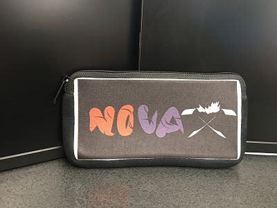
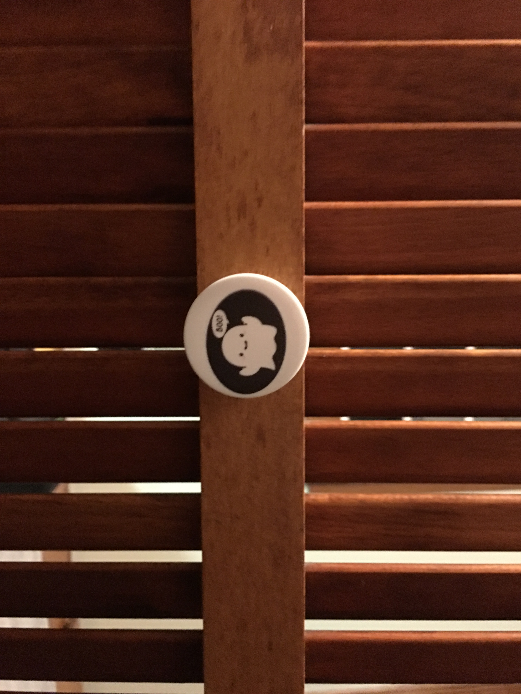
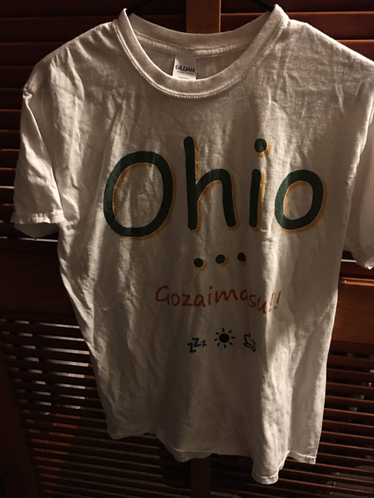

On the third rotation, we learnt about UV Printing and Sublimation. UV Printing is a process using ultraviolet light to dry or cure ink as printed. Sublimation is a process of using heat to transfer dye onto materials. For UV Printing, I designed my picture on Coreldraw and then used the UV Printer to print the image on a popsocket. I created two products using dye sublimation, a t-shirt and a pencil pouch. In both cases, I designed the image using Coreldraw. I used the Brother-GT 361 and the Sawgrass 800 printer for both products. After completing the challenges, I think one advantage that sublimation holds over UV Priting is that it the image printed using sublimation is more durable compared to that of UV Printing.
   Back to Index